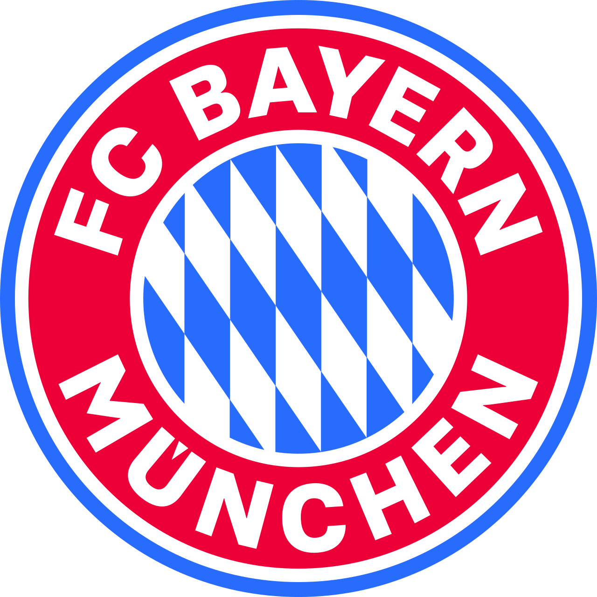
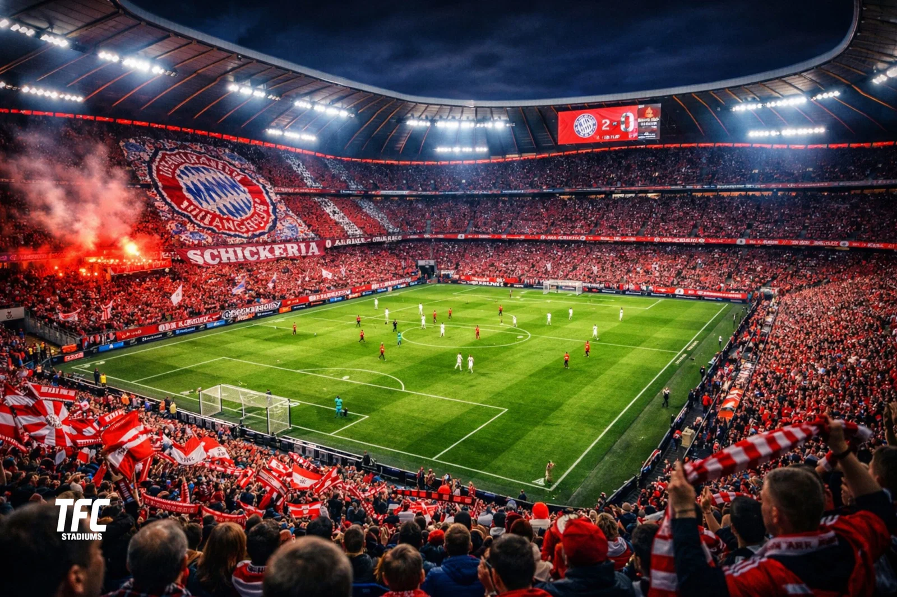

Fußball-Club Bayern München
Fondé en 1900, le Bayern est basé à Munich et joue en rouge et blanc. Il compte parmi les clubs les plus titrés d’Allemagne.

Joueurs légendaires
| Joueur | Nationalité | Période au club | Buts au club |
|---|---|---|---|
| Gerd Müller | Allemande | 1964–1979 | 566 |
| Robert Lewandowski | Polonaise | 2014–2022 | 344 |
| Thomas Müller | Allemande | 2008–2025 | 250 |
Palmarès
| Compétition | Nombre de titres | Dernier titre |
|---|---|---|
| UEFA Champions League | 6 | 2020 |
| Bundesliga | 35 | 2026 |
| Coupe d’Allemagne | 21 | 2026 |
Chant du club
Stern des Südens
Allianz Arena
